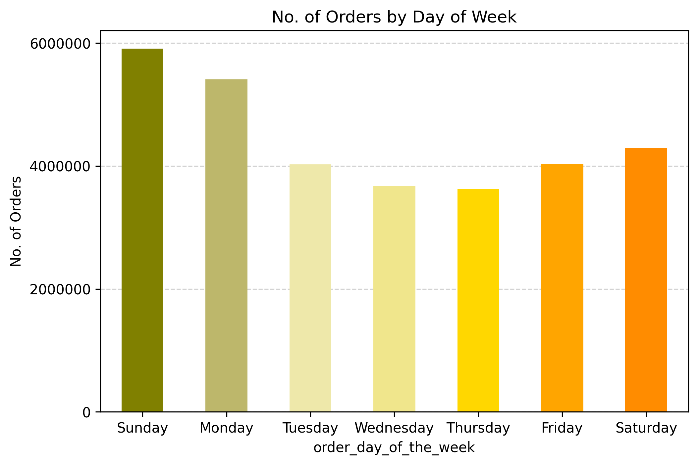
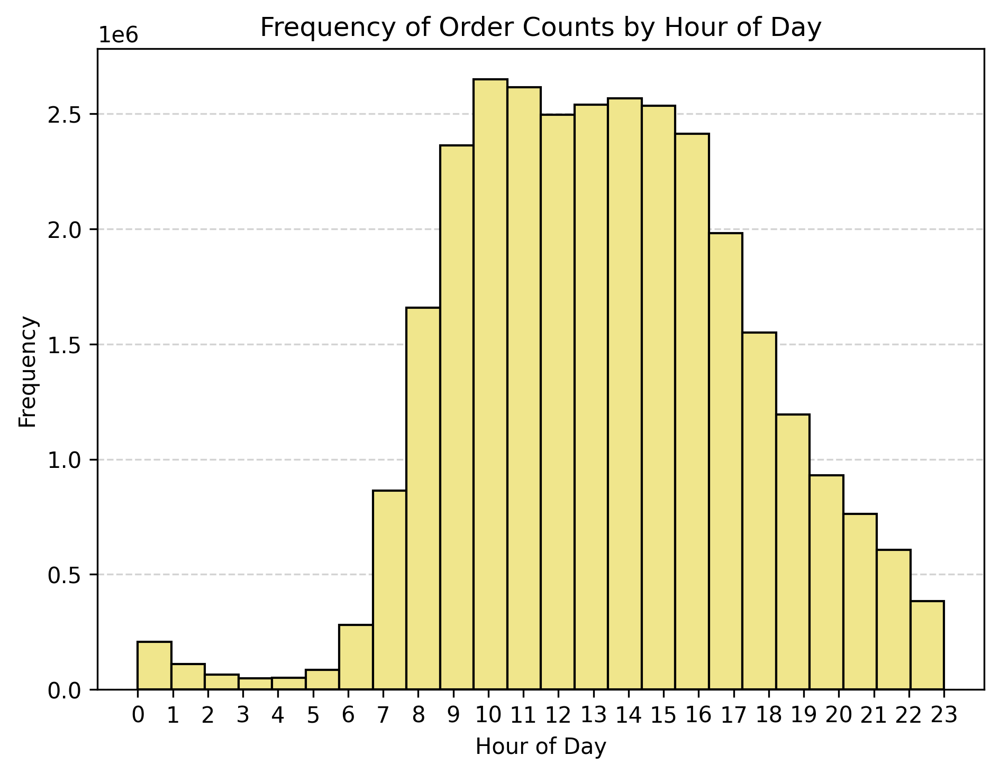
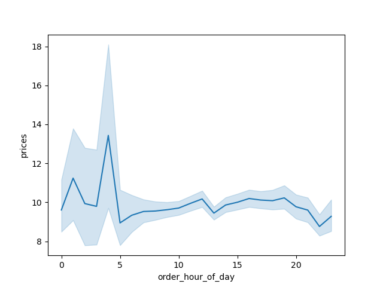
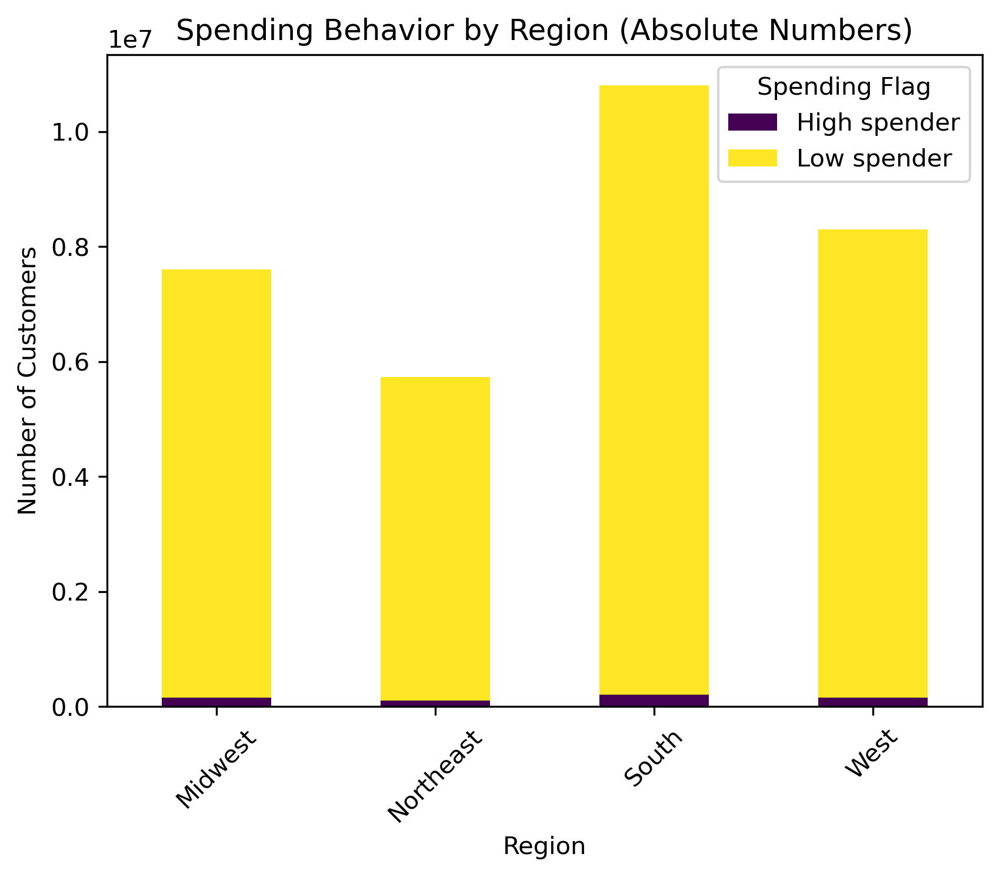
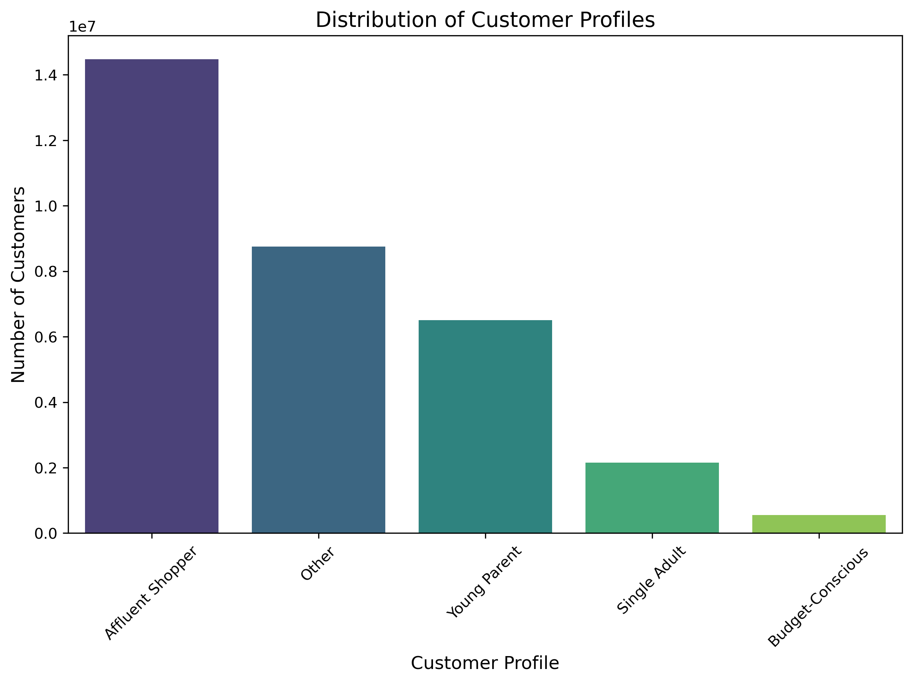
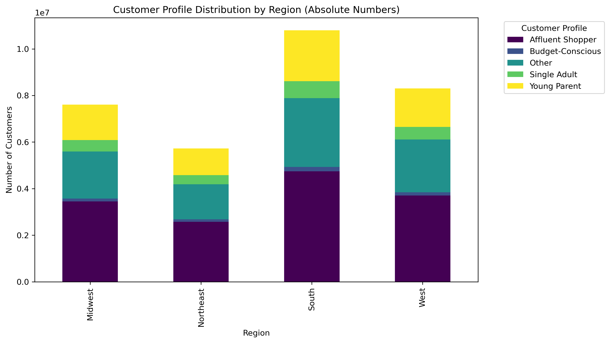

📚 Skills
- Data wrangling
- Data merging
- Deriving variables
- Grouping data
- Aggregating data
🛠 Tools
- Python
- Excel
📋 Procedures
- Cleaning & transforming data (Data wrangling)
- Merging datasets for comprehensive analysis
- Calculating population flows & derived metrics
- Reporting & visualization in Excel
Project Overview
📌 Context:
- Instacart, a leading online grocery platform, aims to enhance its marketing strategy by understanding customer behavior and sales trends.
❓ Business Challenge:
- When are the peak shopping times?
- How do sales vary by time of day & day of the week?
- Which customer segments & regions are the most profitable?
✅ Why It Matters:
- Enables targeted marketing & promotions
- Helps optimize inventory & staffing for peak times


When & Where Do Customers Spend the Most?
🕒 Sales Timing Insights:
- Sales peak in the morning, especially between 10–11 AM.
- Weekends drive significantly higher sales than weekdays.

🌍 Regional Insights:
- The South has the most customers & high spenders.
- The Northeast has the fewest customers & lowest spending.
- Across all regions, low spenders dominate the customer base.

Who Are Instacart’s Most Valuable Customers?
📌 Customer Segments
- Affluent Shoppers → Largest & most profitable customer segment.
- Young Parents & Single Adults → Key secondary segments.
- Budget-Conscious Customers → Smallest group, least profitable.
- Unclassified Customers ("Other") → Potential for further segmentation.

📍 Regional Customer Patterns
- Affluent Shoppers dominate all regions, especially South & Midwest.
- Young Parents are a growing segment across multiple regions.

Optimizing Instacart’s Marketing Strategy
📊 Short-Term Actions (Next 6 Months):
- Weekend & morning promotions (boost engagement during peak times).
- Targeted ads for high-spending regions (especially the South).
- Optimize ad placement based on customer behavior.
📈 Long-Term Growth Strategy:
- Develop loyalty programs for Affluent Shoppers.
- Expand regional marketing in the Midwest (high potential for Young Parents).
- Improve segmentation to better capture “Other” customers.